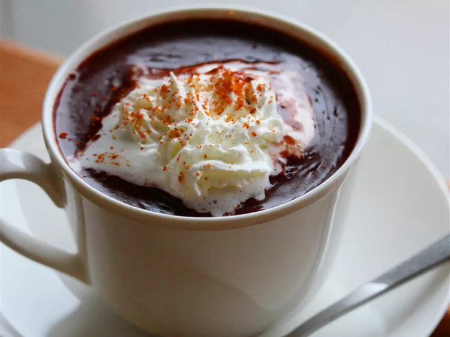

How To Make Italian-Style Hot Chocolate
[<-- Back to Recipe List]

Italian-style Hot chocolate is one of the most amazing treats in the world! You have to try this pudding-like chocolate decadence! Add some Irish cream, cinnamon, and whipped cream for a fun variation, or create your own!
Ingredients:
- 3 tablespoons cocoa powder
- 1 ½ tablespoons white sugar
- 1 ½ cups milk
- 2 tablespoons milk
- 1 tablespoons cornstarch
Directions:
- Mix the cocoa powder and sugar together in a small saucepan. Stir the 1 1/2 cups milk into the saucepan until the sugar has dissolved. Place over low heat; slowly bring the mixture to a low simmer.
- Whisk 2 tablespoons of milk together with the cornstarch in a small cup; slowly whisk the cornstarch slurry into the cocoa mixture. Continue cooking, whisking continually, until the hot chocolate reaches a pudding-like thickness, 2 to 3 minutes.
[<-- Back to Recipe List]